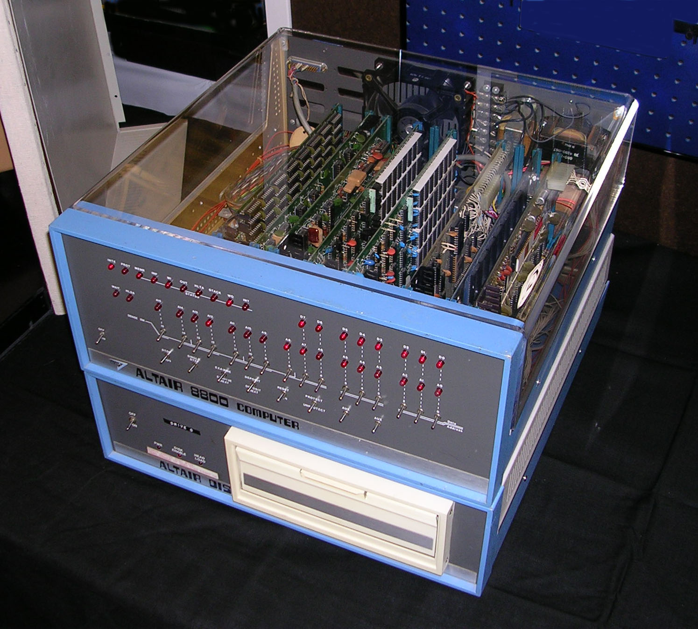

The Newborn
Before Computer Science started crowning [1], there were no math classes, because they had yet to be founded. Around 300 BC, the doctor was yelling, “I see the head!” And the real life story began; the abacus, a tool for counting, came to be. For 200 years, the Greeks and Romans shared the same idea in different physical forms; the Greeks named theirs Salamis while the Romans had two versions: the Calculii and the Hand-Abacus(Fernandes, 2015).
For 1,395 years,starting in 5 C.E [2], three new boards dominated the game in Western Europe: the Apices, Coin-board, and Line-Board. From there, the abacus’ style kept evolving to turn into what we see today(Fernandes, 2015).
A high tech abacus, today, is known as a calculator; from a bank determining interest, to figuring out the square root of 289, a calculator is most preferred. These convenient machines didn’t always have the sleek look they do today, in 1943, a large contraption called the ENIAC, a high-speed computer meant to run calculations, was in the works and finished construction two years later; yes, the first calculator weighed 30 tons(ComputerHistory.org).
Personal Computing
At first, having anything close to resembling what a computer is now had to be built by the user. All parts were sold separately and the delicate act of soldering[3] pieces together was nothing short of tedious and certainly no work of a dilettante. The first to distribute mail-order computer kits was MITS(Micro Instrumentation and Telemetry Systems) with the Altair 8800! The price was cheap,a mere $400(now $2,509.55), considering all the components it came with that could’ve cost hundreds individually. When Altair hit the market, in 1974, it became an obvious success receiving 2,000 orders when they only needed to sell 200 to break even(Veit,1999).
Such an prodigious demand resulted in slow delivery dates as the manufacturer attempted to produce hundreds of more units. Altair’s competitor, the IMSAI 8080($600 or $3,764.32 today) worked the same using flickering lights as an output and flicking switched to input data. The first type of software for the Altair appeared on the cover of Popular Electronics and was created by Bill Gates and Paul G. Allen in 1975; BASIC, as it was called- Beginner’s All-purpose Symbolic Instruction Code- was made custom to the machine and allowed novice hobbyists to better understand their computers(History.com Staff 2011).
Since one copy of the program can be shared among others, Bill was barely earning anything for his work; in a public, written statement, he told people to stop stealing his software or else he stop writing it. His efforts were futile, for this reason he decided to start a business with Paul and sell his software under the name Microsoft(Viet,1999).
A year later, the Apple l was built by Steve Jobs and Steve Wozniak;
 which compared to the Altair had more memory, a cheaper processor, and a monitor
with a screen(Viet,1999). Steve encouraged others to create useful applications for his
computer and to share them with other users. Thus, the creation of software such as VisiCalc,
which worked as a tool for creating spreadsheets, came to benefit businesses and a real
potential for computers came to light.
which compared to the Altair had more memory, a cheaper processor, and a monitor
with a screen(Viet,1999). Steve encouraged others to create useful applications for his
computer and to share them with other users. Thus, the creation of software such as VisiCalc,
which worked as a tool for creating spreadsheets, came to benefit businesses and a real
potential for computers came to light.